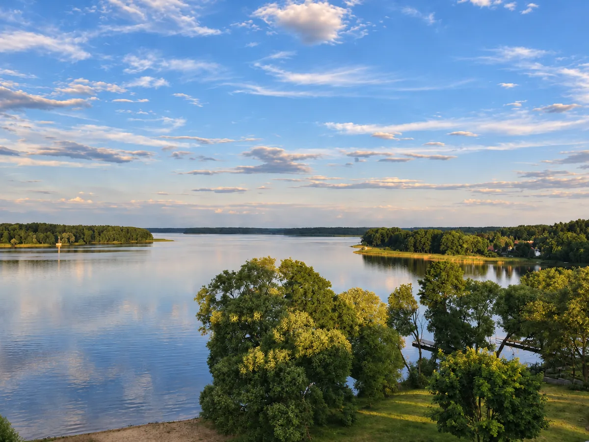
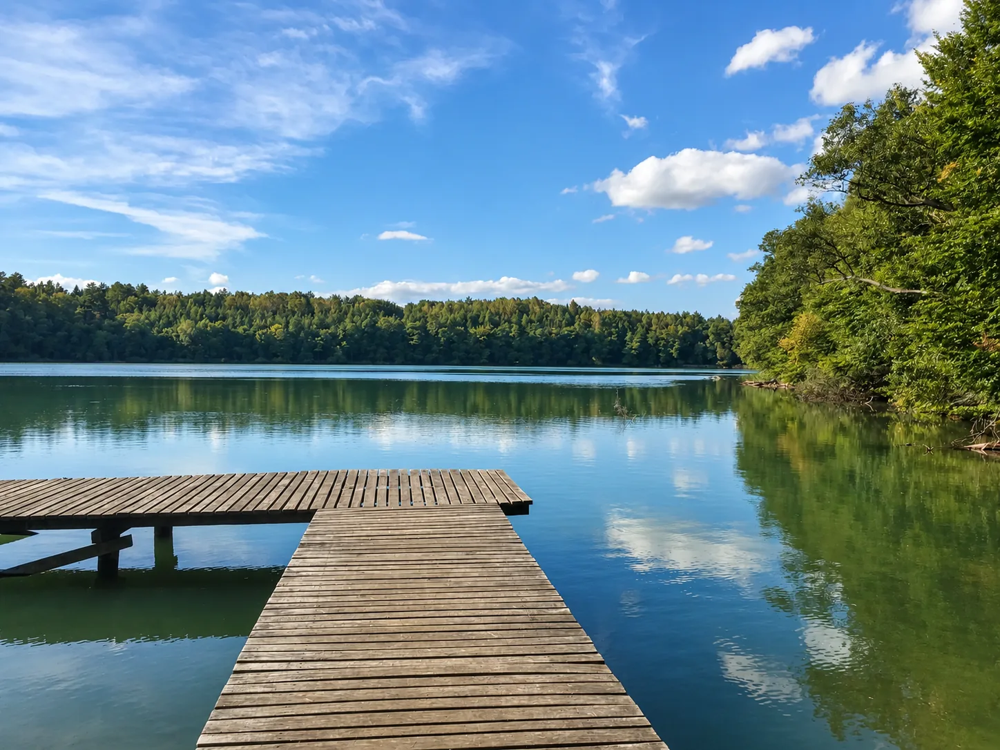
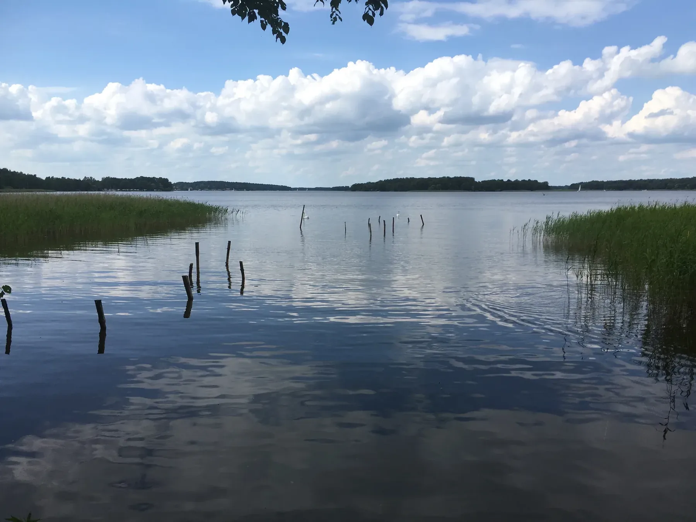
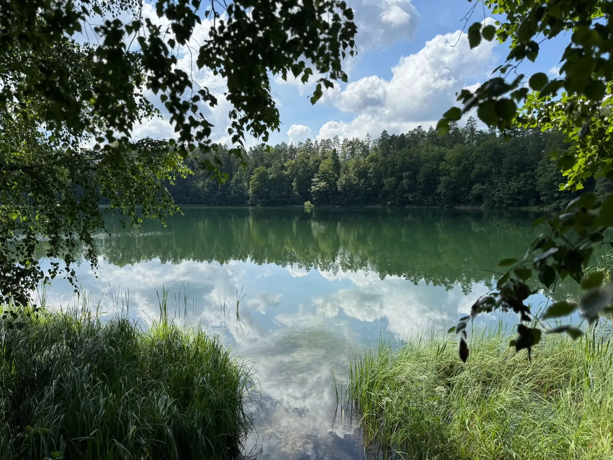
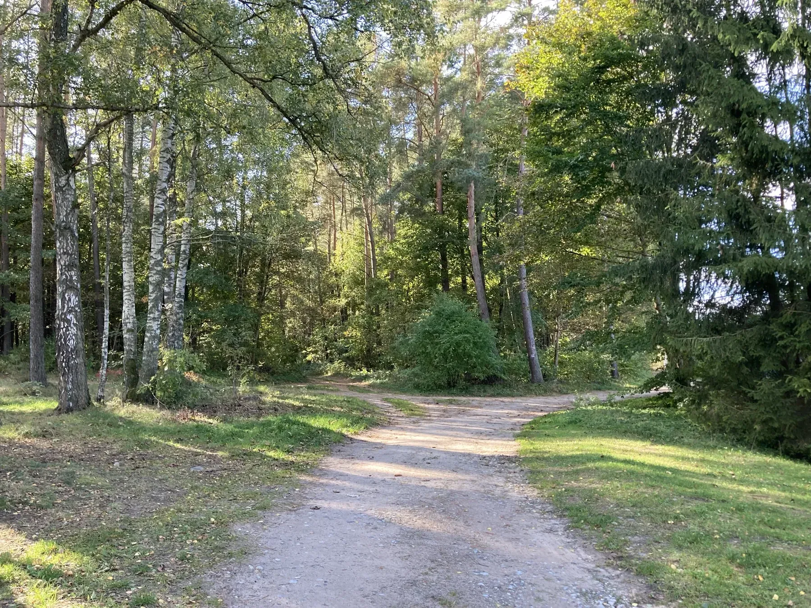

Slow life po siemiańsku
Jeziorak pod ręką. Las za rogiem.
Jednego dnia możesz zacząć od kąpieli, drugiego ruszyć rowerem do leśnych jezior, a trzeciego po prostu zostać na tarasie. Siemiany dają dużo możliwości, ale nie narzucają tempa.

wieczór nad Jeziorakiem leśne drogi
leśne drogi
śródleśny UrowiecKąpiel. Las. Drzemka. Zachód słońca. Każdy dzień układa się po swojemu.
A kiedy nabierzesz ochoty na więcej - przewodnik poniżej prowadzi od miejsc oddalonych o kilka minut po całodniowe wycieczki.
Zanurzenie w naturze
Jedno duże jezioro.
Dziesiątki małych odkryć.
Jeziorak jest osią regionu, ale warto zejść z głównego szlaku. W lesie kryją się Jasne, Urowiec, Czarne, Kociołek, Merynos i inne niewielkie akweny.

Woda
Jeziorak
Bardziej archipelag niż zwykłe jezioro: wyspy, zatoki, półwyspy i ponad 27 km wody do odkrywania.
Czytaj przewodnik →
W lesie
Małe jeziora
Jasne, Urowiec, Czarne, Kociołek, Merynos i nasze własne zdjęcia z trasy.
Zobacz jeziora →
Na piechotę i rowerem
Lasy Iławskie
Leśne drogi, pętle spacerowe, trasy rowerowe i historyczno-przyrodniczy szlak Solniki.
Wybierz trasę →Gdy chcesz ruszyć dalej
Wycieczki na kilka godzin
albo na cały dzień.
Od Jerzwałdu i Susza po niezwykły Kanał Elbląski, ruiny Szymbarka i Kamieńca, Iławę, a nawet Malbork na całodniową wycieczkę.
Nasze polecenia
Co polecamy z własnego doświadczenia.
Szopa
Na smażoną rybę i normalny obiad. To jedno z tych miejsc, które od dawna są częścią letniego życia Siemian - bez zadęcia, za to z lokalnym charakterem.
Więcej o SiemianachPlaża + Warmianka
W Suszu lubimy połączyć plażę nad Jeziorem Suskim i duży plac zabaw z obiadem w Warmiance - dobrym, bezpretensjonalnym i niedrogim.
Zobacz pomysł na wyjazdKompendium
Nie tylko „co zobaczyć”.
Dlaczego to miejsce jest ciekawe.
W przewodniku zbieramy historię Siemian, ślady Nienackiego i Stachury, dawne leśnictwo, opowieści o Lipowym Ostrowie, tajemniczym kanale pod Jerzwałdem, ruinach pałaców i zapomnianych miejscach dawnych Prus Wschodnich.

Czytaj dalej
Za każdym zakrętem jest jakaś historia.
Nieistniejące wsie, dawne leśniczówki, pałace, stare przeprawy i miejsca znane z książek Nienackiego. Jeśli lubisz wiedzieć, co kryje się za krajobrazem, tutaj można czytać okolicę jak opowieść.
Solniki
Nieistniejąca wieś, smolarnia, huta szkła Christiana Korna, tartak i ślady dawnej zabudowy.
Poznaj historię →LiteraturaPan Samochodzik
Jerzwałd, Jeziorak, Matyty, dawny prom i miejsca, które przenikały do świata Nienackiego.
Śladami Nienackiego →RowerWokół Jezioraka
Najlepsze opisy tras, Komoot, gotowy plik GPX i pomysły na krótsze pętle.
Wybierz trasę →Zapomniane miejscaJanuszewo
Ruiny wielokrotnie przebudowywanego pałacu i historia rodzin Oldenburgów i Lehndorffów.
Czytaj więcej →Tajemnica JeziorakaZatoka Rudnia
Niepotwierdzona historia o wraku niemieckiego Dorniera na dnie jednej z zatok Jezioraka.
Poznaj trop →Nasza baza
Odnowiony domek.
Jeziorak kilka minut pieszo.
Własny ogród, duży zadaszony taras, 200 m do Jezioraka i 100 m do lasu. W środku są dwie sypialnie i salon dla maksymalnie 6 osób, wyposażona kuchnia, kominek, Netflix oraz szybkie Wi-Fi ze Starlinka. Domek został gruntownie odnowiony w 2025 r.